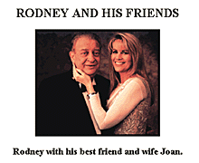

|
Early in October, after a hard day of surfing, I came across http://www.rodney.com, a site dedicated to the work and life of Rodney Dangerfield. Initially, I assumed this was a fan site, except that a couple of elements, like correspondence between Rodney and the Academy of Motion Picture Arts and Sciences, seemed like tough artifacts for a fan to scrape up. Figuring this was a lot of effort for a Rodney enthusiast to go through, I dropped the site some e-mail. Less than a day later I got a note back -- yes, this was really Rodney; yes, he does his own Web page; and yes, he's getting RealAudio for all those .wav files of his Joke of the Day. Finding a celebrity who not only knows about the Web but actually participates, especially at age 73, is quite a rarity. So IU decided to talk to Rodney about his experience in cyberspace and answer the ultimate question: Could the star of Caddyshack, Easy Money and Back to School at least find some respect on the Web? Internet Underground: What projects are you working on right now in real life? Can you tell us a little about the film you're currently shooting? Rodney Dangerfield: I'm excited about my new talking book, La Contessa, where I reveal my torrid love affairs and also about my new movie, Meet Wally Sparks, about a scandalous talk show host. Burt Reynolds and Cindy Williams are in it and cameos are made by Michael Bolton, Jay Leno, Bob Saget, Tony Danza and Ron Jeremy. IU: What was your first experience with computers? RD: I thought, "Wow, who invented this?" Then, I pulled a muscle downloading. IU: How did you get interested in the Internet and cyberspace? RD: My wife showed me and I thought it was wild. IU: How long has your Web site been up and who designed it? Who created your screen saver? RD: I launched it in March. I decided the kind of stuff I wanted up there and had some help designing it from my wife and some computer guys at HLC-Internet and an independent consultant named Ken Johnson. IU: Does having a Web site allow you to show more of your personality than more traditional media? What part of your site do you think best defines you as a person as well as an entertainer? RD: Since it's my own personal site, I can say whatever I want and talk about my side of the story with the Academy rejecting me and AT&T saying I'm not dignified enough to represent them. Whatever I want to talk about... sort of a soapbox, I guess. IU: How much e-mail do you get? Do your fans actually believe that it's you? Are people surprised that you have a 'net presence? RD: People are surprised, and when I do answer, sometimes they write again and say "Only the real Rodney would answer like that," and other times they don't think it's me at all. I get hundreds of letters a day and pick out some good ones to answer. IU: Has being on the Internet and having e-mail given you any new jokes or material for your routine, and if so, what are they? RD: One guy sent me a joke I liked. I bought it from him, but it's too dirty to quote here. IU: Do you e-mail other celebrities? What is the general Hollywood reaction to cyberspace? RD: I've sent messages to a few and they never answered back. I can't speak for "general Hollywood," but I'm still learning my way around cyberspace. It's all new to me, too.  IU: What are your favorite Web sites? RD: I like the idea of Virtual Vegas and RealAudio. And I'll give my wife a plug: visit her site at jungleroses.com. IU: What's the weirdest e-mail you've ever gotten? RD: Someone sent a pornographic photo once in response to something I said through e-mail. At the time, I didn't know you could send photos so it came as a real surprise. IU: Where is your computer set up and what does the surrounding environment look like? RD: My computer sits on the credenza behind my desk. The microphone for the computer is propped up on a comedy award statue. All this is in my living room. My wife decorated the whole place. IU: Even in this new medium, do you still get no respect? RD: No respect at all, are you kiddin'? I never had any luck with computers. I bought an Apple. It had a worm in it!
|